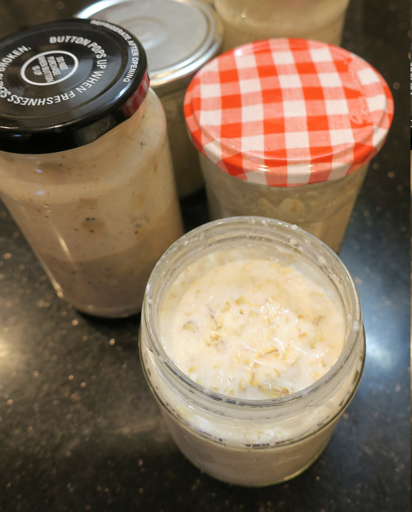

Overnight Porridge
 Meat
Meat

1/2 cupoats1 tbspchia seeds1/2 cupalmond milk1 tbspgreek yoghurt
Place oats, chia seeds, almond milk and greek yoghurt in a glass jar
Refrigerate overnight
Serve with your choice of toppings